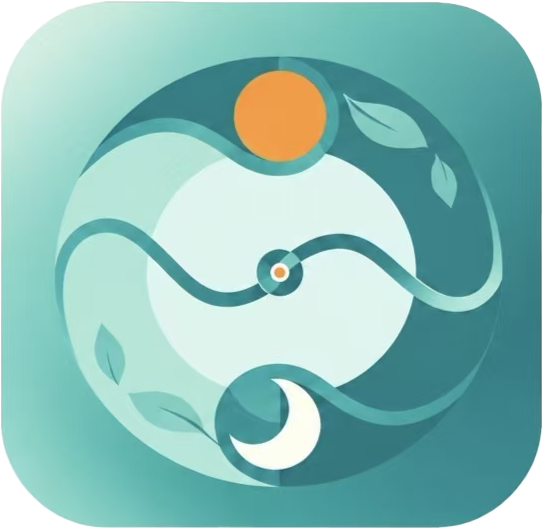

为什么周末补觉反而更累？
身体不是一部可以随意快进和暂停的机器。补觉改变的看似只是起床时间，实际上却牵动了整天的激素、体温与精力节律。
生物钟不是闹钟，不能随意后拨
连续两天晚睡晚起，会让身体误以为“时区”发生了变化。周一重新早起时，你并不是单纯少睡了两小时，而是在对抗一套已经被推迟的生物钟。
与其一次补足一周的缺口，不如让每天多睡 20—30 分钟，身体更容易把这部分变化保留下来。
围绕作息、睡眠与精力的一体化记录体验

跟着身体的节律，
把生活慢慢调回来。
三步建立属于你的节律基线
登录即表示同意《用户协议》与《隐私政策》
比前天多睡了 40 分钟
比目标入睡时间晚
14:00 前后可能出现低谷
今晨自然醒来得较晚，今晚小幅提前比一次大幅调整更容易坚持。
睡前 1 小时避免强光与短视频
14:00 后尽量不再摄入咖啡因
其中 2 项可能将入睡时间推后了约 18 分钟。
本周规律度
比上周提高 8%平均睡眠时长较上月缩短 22 分钟，建议先固定起床时间。
温和补镁，给夜间放松留出一点空间。
建议本周先固定 07:00 起床，晚间入睡会自然前移。
午睡不超过 25 分钟，避免进入深睡后更难醒来。
不再摄入咖啡因，今晚的睡意才会按时抵达。
身体不是一部可以随意快进和暂停的机器。补觉改变的看似只是起床时间，实际上却牵动了整天的激素、体温与精力节律。
连续两天晚睡晚起，会让身体误以为“时区”发生了变化。周一重新早起时，你并不是单纯少睡了两小时，而是在对抗一套已经被推迟的生物钟。
与其一次补足一周的缺口，不如让每天多睡 20—30 分钟，身体更容易把这部分变化保留下来。
正在努力 11 点前睡觉
连续 7 天完成记录，入睡时间比月初提前了 16 分钟。
时衡不提供医疗诊断，仅用于健康记录与生活调节参考。